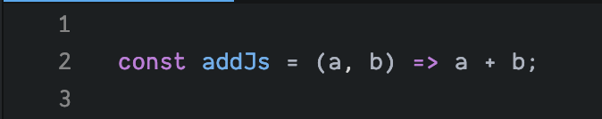
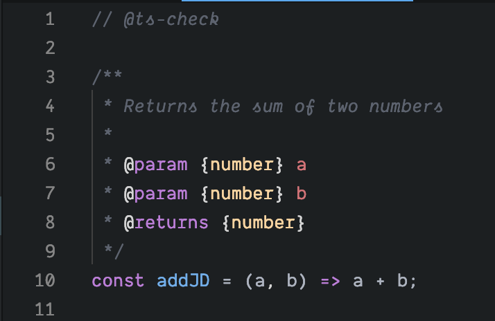
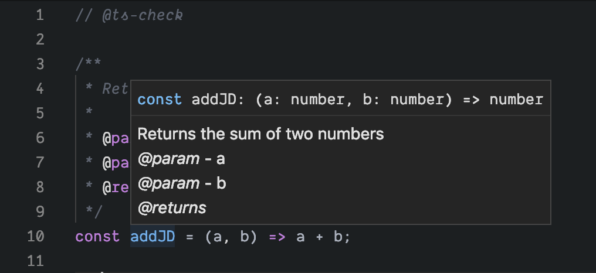

Ondrej Maksi
💡 TS hit an 🚀inflection point ~ e.o. 2018
💡 State of JS 2018 46% Used, would use again, 33% Would like to learn
💡 GitHub Octoverse 2018 - 3. fastest growing language
💡 Even FB projects (Jest, ...) migrating to TS from Flow
🐰 Thanks to MS push along with strong VSCode support 💪
👾 Keep in mind TS is a whole new language. You'll have to learn it.
🕑 Your files will be .ts and .tsx (git history, legacy code issues)
🏃 Your TS files don't run by themselves
🚧 How to compile? Babel? Webpack? call tsc manually? node-tsc? multiple stages? build time? runtime?
💥 oh, tsconfig.json! (just 5 pages of compiler settings)
👼 Consider all of these before starting a full TS project
🕸 All of these multi layer compiling and build systems are what devs don't like the most about JS
✅ No changes to JS code necessary
✅ Annotate with JSDoc comment blocks
✅ Allows instant incremental implementation
✅ Code remains directly executable
✅ full type VSCode support = intellisense, linting, etc...
✅ supports good practice of writing comments, todo, fixme
🚀 Future of TypeScript
🚀 TS Vision: Types should be for all users of JS not just for users of TS
basic addition function



👱 Ondrej Maksi
✉️ hello@ondrejmaksi.com
🐈 https://github.com/omaksi